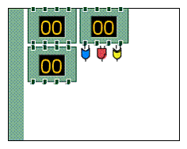
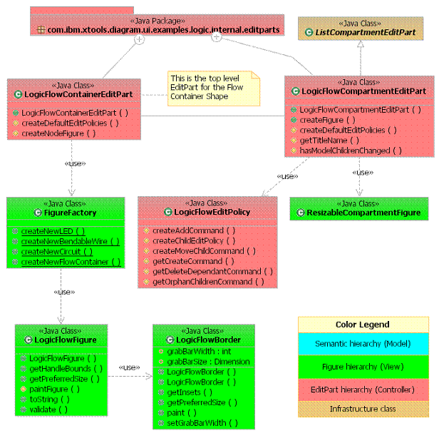

Tutorial: Modifying a container to support automatic layout
|
Version: 0.1 |
Date: August 11, 2005 |
Contents
· Overview
· Introduction
· Modifying a container to support automatic
layout
· Summary
Overview
This tutorial provides the reader with the steps to initializing a container that can automatically layout it's children accordingly to a specific hseuristic.
References
This tutorial references the following tutoral:
Create a shape
Introduction
In this tutorial, we will use the Logic Diagram Example to illustrate how to initialize the logic flow container to layout it's children by utilizing a flow layout. To gain familiarity with the Logic Diagram Example, refer to the Logic Example Guide.
Modifying a container to support automatic
layout
[back
to top]
Layout is usually managed by the user through explicit movement of diagram shapes inside the container. Sometimes, it is more convenient to have a managed layout that automatically places shapes based on an algorithm. In the Logic example, the Flow container shape is an example of this. Logic elements placed inside the flow container are automatically positioned relative to the other elements. To do this we need to override some default behavior that container shapes in exhibit.
Example:
Flow Container Shape displaying automatic layout containment

By default the XYLayoutEditPolicy is installed on a shape container that allows for specific placement of elements with-in the container. If you wish to have a more managed layout that automatically positions elements, then a different layout edit policy would need to be installed. In this example, we are interested in installed a directed flow layout such that the elements positions are automatically placed in a flow chart like manner.
Add entries to the contribution for the palette provider for the flow container shape
See #Add entries to the contribution for the palette provider.
Add new View provider entry for the flow container shape
This is very similar to the Circuit shape view provider in that a sub-container view is created to contain the children.
See #Add new View provider entry for the Circuit shape
Add new EditPart provider entry for the flow container shape
A custom EditPart is necessary to handle the unique functionality of the Logic Flow container (See #Add new EditPart provider entry). Since the layout of the children is handled uniquely (i.e. managed), a new layout EditPolicy needs to be installed on the container compartment. This EditPolicy is called the ?LogicFlowEditPolicy? and it will automatically layout the shapes in a grid fashion. LogicFlowEditPolicy? is needed since flow container uses ?FlowLayout? to arrange components. Make ?LogicFlowEditPolicy? inherit from ?FlowLayoutEditPolicy?.
The ?LogicFlowCompartmentEditPart? inherits from ?ListCompartmentEditPart? instead of ?ShapeCompartmentEditPart?. The reason is that the latter assumes that the layout is going to be manipulated by the user (i.e. XYLayoutEditPolicy) instead of managed by the container. ?ListCompartmentEditPart? is lightweight and doesn?t make any such assumptions. In the ?LogicFlowCompartmentEditPart, the ?createFigure? method was overridden to allow automatic positioning of the children properly by setting the layout manager as ?FlowLayout?. It was also necessary to overwrite the abstract method ?hasModelChildrenChanged? from ListCompartmentEditPart in ?LogicFlowCompartmentEditPart? since there is no canonical reflection of the underlying semantic elements inside the container.
In
LogicFlowCompartmentEditPart:
/**
* @see
org.eclipse.gef.editparts.AbstractGraphicalEditPart#createFigure()
*/
public IFigure
createFigure() {
ResizableCompartmentFigure
rcf = (ResizableCompartmentFigure) super.createFigure();
FlowLayout layout = new FlowLayout();
layout.setMajorSpacing(MapMode.DPtoLP(5));
layout.setMinorSpacing(MapMode.DPtoLP(5));
rcf.getContentPane().setLayoutManager(layout);
return
rcf;
}
Example
Logic Flow Container structure:

Summary
In this tutorial, we did the following:
- Initialized the flow container class to support a custom layout type that automatically laid-out it's children.